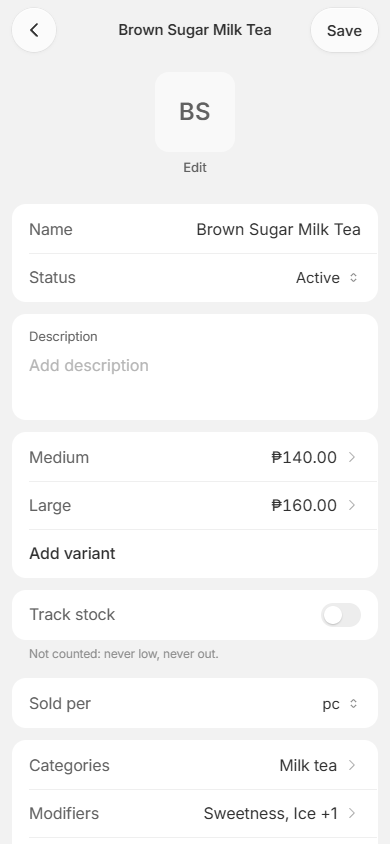
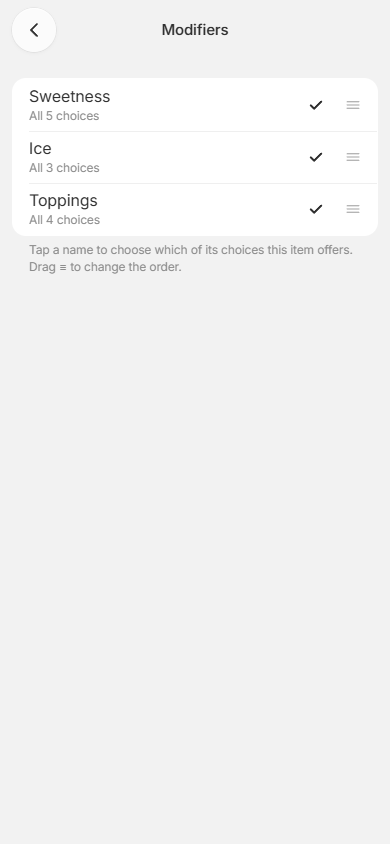
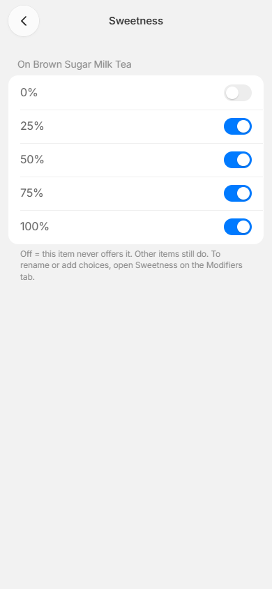
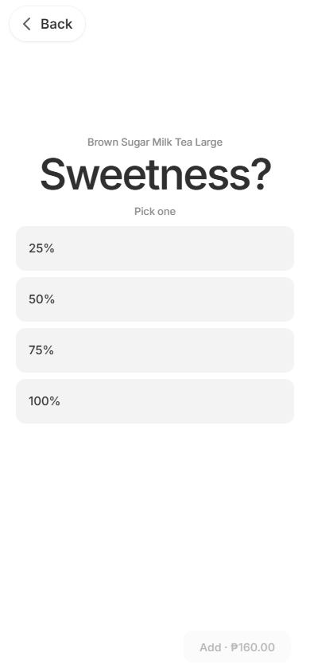
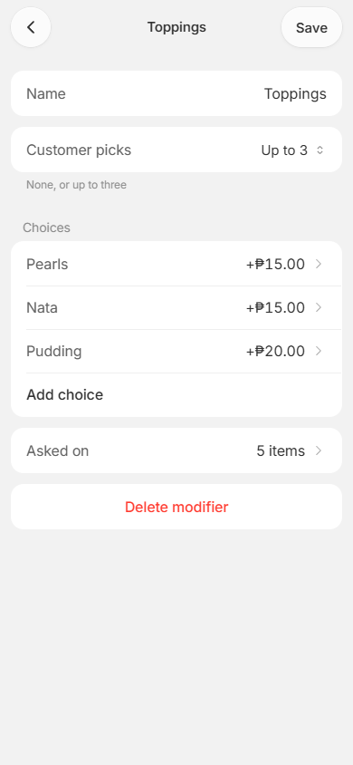
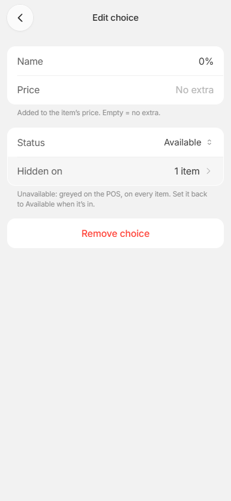
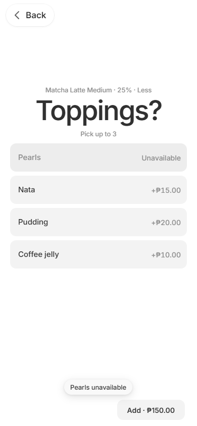
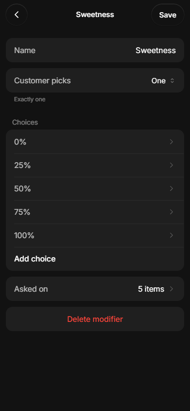
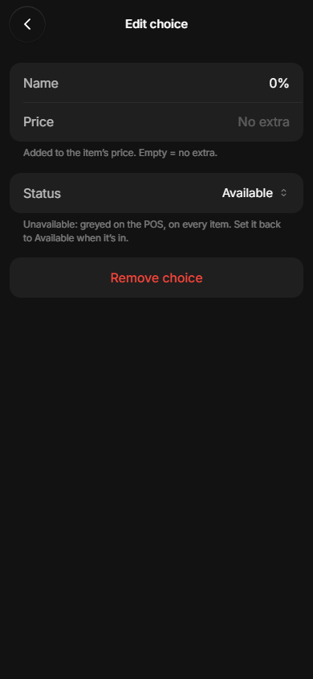
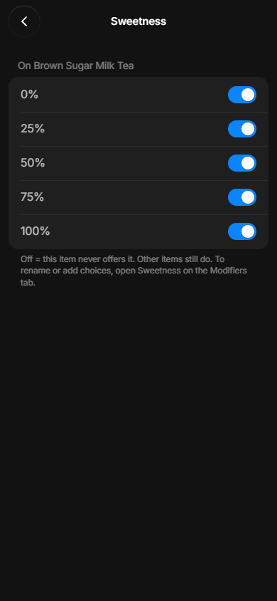

Two switches
A choice like 0% or Pearls can be turned off in two ways. Both are built today.
1. Hide on one item
Brown Sugar never offers 0%. This one is permanent and set per item. Matcha keeps its 0%.




2. Ran out today (Status)
Pearls ran out, so every drink greys it out until it's set back. This one is a state on the choice itself.



Finding 10: where the tester got stuck
They wanted switch 1 but opened switch 2's page, saw "every item", and backed out. They didn't think to open the item.



Side by side
| Hide on one item | Ran out (Status) | |
|---|---|---|
| Where | Item › Modifiers › Sweetness | Modifiers › Toppings › Pearls |
| Covers | That one item | Every item that asks it |
| On Sell | Gone | Greyed, can't tap |
| Meant for | "This drink never has 0%" | "Out of Pearls today" |